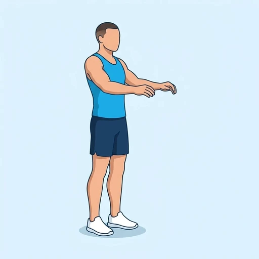
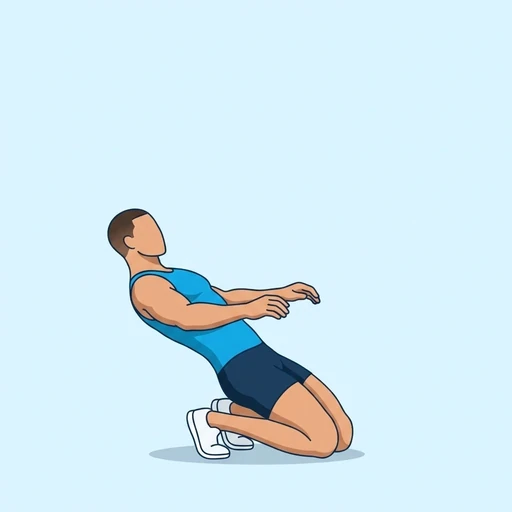

Sissy Squat
A bodyweight exercise for the quadriceps. You rise onto your toes, push your knees forward and lean back as you lower, keeping your hips open and your body in one line from knees to shoulders. The knees travel far in front of the toes, which makes it a very demanding exercise for the front of the thigh.
Upper legs · Bodyweight · Advanced


Muscles worked by the Sissy Squat
Primary
Secondary
Also called: quad, quads, quadriceps, quadriceps femoris, front thigh.
Equipment
No equipment — this is a bodyweight exercise.
How to do the Sissy Squat
- Stand tall with your feet about hip-width apart and your arms stretched out in front of you for balance.
- Rise onto the balls of your feet and keep your hips extended so that your body forms a straight line.
- Bend your knees and let them travel forward and down while you lean your upper body back, keeping the line from knees to shoulders.
- Lower until your knees are close to the floor, or as far as you can control.
- Press through the front of your feet and push your knees back to straighten your legs and stand up again.
- Complete the planned repetitions.
Form tips
- Hold on to a wall or a sturdy post with one hand at first to keep your balance.
- This exercise loads the knees heavily; shorten the range if you feel pain at the front of the knee, and build up gradually.
- Keep your hips pushed forward; if you sit them back it becomes an ordinary squat and the work leaves the quadriceps.
At a glance
| Body part | Upper legs |
|---|---|
| Category | Strength |
| Force type | Push |
| Mechanic | Isolation |
| Difficulty | Advanced |
| Equipment | Bodyweight |
| Goals | Hypertrophy, Strength |
| Tags | Leg day, Calisthenics, No axial load, Lower back safe, Shoulder safe |
| MET | 6.0 (metabolic equivalent, for calorie estimates) |
| Unilateral | No |
| Bodyweight | Yes |
| Dataset id | sissy-squat |
Sissy Squat in German & Spanish
| German | Sissy Squat |
|---|---|
| Spanish | Sissy Squat |
Descriptions, instructions and tips ship in all three languages in the JSON.
Related exercises
Exercise data (JSON)
The record below is exactly what exercises.json ships for this exercise — names, descriptions, instructions and tips in English, German and Spanish.
{
"id": "sissy-squat",
"name_en": "Sissy Squat",
"name_de": "Sissy Squat",
"name_es": "Sissy Squat",
"description_en": "A bodyweight exercise for the quadriceps. You rise onto your toes, push your knees forward and lean back as you lower, keeping your hips open and your body in one line from knees to shoulders. The knees travel far in front of the toes, which makes it a very demanding exercise for the front of the thigh.",
"description_de": "Eine Körpergewichtsübung für den Quadrizeps. Du gehst auf die Zehenspitzen, schiebst die Knie nach vorn und lehnst dich beim Absenken zurück, wobei die Hüfte offen bleibt und dein Körper von den Knien bis zu den Schultern in einer Linie ist. Die Knie wandern weit vor die Zehen, was sie zu einer sehr fordernden Übung für die Oberschenkelvorderseite macht.",
"description_es": "Un ejercicio con el peso corporal para los cuádriceps. Te elevas sobre las puntas de los pies, llevas las rodillas hacia adelante y te inclinas hacia atrás al bajar, manteniendo las caderas abiertas y el cuerpo en una sola línea desde las rodillas hasta los hombros. Las rodillas avanzan mucho por delante de los dedos de los pies, lo que lo convierte en un ejercicio muy exigente para la parte delantera del muslo.",
"category": "strength",
"force_type": "push",
"mechanic": "isolation",
"difficulty": "advanced",
"body_part": "upper_legs",
"primary_muscles": [
"quadriceps"
],
"secondary_muscles": [
"hip_flexors",
"rectus_abdominis"
],
"goals": [
"hypertrophy",
"strength"
],
"tags": [
"leg_day",
"calisthenics",
"no_axial_load",
"lower_back_safe",
"shoulder_safe"
],
"variation_group": "squat",
"is_unilateral": false,
"is_bodyweight": true,
"instructions_en": [
"Stand tall with your feet about hip-width apart and your arms stretched out in front of you for balance.",
"Rise onto the balls of your feet and keep your hips extended so that your body forms a straight line.",
"Bend your knees and let them travel forward and down while you lean your upper body back, keeping the line from knees to shoulders.",
"Lower until your knees are close to the floor, or as far as you can control.",
"Press through the front of your feet and push your knees back to straighten your legs and stand up again.",
"Complete the planned repetitions."
],
"instructions_de": [
"Steh aufrecht, die Füße etwa hüftbreit und die Arme zum Gleichgewicht nach vorn gestreckt.",
"Geh auf die Fußballen und halte die Hüfte gestreckt, sodass dein Körper eine gerade Linie bildet.",
"Beuge die Knie und lass sie nach vorn und unten wandern, während du den Oberkörper nach hinten lehnst und die Linie von den Knien bis zu den Schultern hältst.",
"Senke dich, bis die Knie nah am Boden sind oder so weit, wie du es kontrollieren kannst.",
"Drücke dich über die Vorderfüße hoch und schiebe die Knie nach hinten, um die Beine zu strecken und wieder aufzustehen.",
"Absolviere die geplante Anzahl an Wiederholungen."
],
"instructions_es": [
"Ponte erguido con los pies separados al ancho de las caderas y los brazos estirados al frente para mantener el equilibrio.",
"Elévate sobre las plantas de los pies y mantén las caderas extendidas para que el cuerpo forme una línea recta.",
"Flexiona las rodillas y deja que avancen hacia adelante y hacia abajo mientras inclinas el torso hacia atrás, manteniendo la línea desde las rodillas hasta los hombros.",
"Baja hasta que las rodillas queden cerca del suelo, o hasta donde puedas controlar.",
"Empuja con la parte delantera de los pies y lleva las rodillas hacia atrás para estirar las piernas y volver a ponerte de pie.",
"Completa el número de repeticiones previsto."
],
"tips_en": [
"Hold on to a wall or a sturdy post with one hand at first to keep your balance.",
"This exercise loads the knees heavily; shorten the range if you feel pain at the front of the knee, and build up gradually.",
"Keep your hips pushed forward; if you sit them back it becomes an ordinary squat and the work leaves the quadriceps."
],
"tips_de": [
"Halte dich anfangs mit einer Hand an einer Wand oder einem stabilen Pfosten fest, um das Gleichgewicht zu halten.",
"Diese Übung belastet die Knie stark; verkürze den Bewegungsumfang, wenn du Schmerzen an der Knievorderseite spürst, und steigere dich schrittweise.",
"Halte die Hüfte nach vorn geschoben; wenn du sie nach hinten setzt, wird daraus eine gewöhnliche Kniebeuge und die Arbeit verlässt den Quadrizeps."
],
"tips_es": [
"Al principio sujétate con una mano a una pared o a un poste firme para mantener el equilibrio.",
"Este ejercicio carga mucho las rodillas; acorta el recorrido si notas dolor en la parte delantera de la rodilla y progresa poco a poco.",
"Mantén las caderas empujadas hacia adelante; si las llevas hacia atrás se convierte en una sentadilla normal y el trabajo sale de los cuádriceps."
],
"met": 6.0,
"images": {
"flat": {
"start": "images/flat/sissy-squat-start.webp",
"peak": "images/flat/sissy-squat-peak.webp"
}
}
}Fetch just this exercise
const { exercises } = await fetch(
"https://exercise-dataset.com/exercises.json"
).then(r => r.json());
const ex = exercises.find(e => e.id === "sissy-squat");Free for personal and commercial in-app use with attribution (“Exercise data by RepDB”) — see the license and ready-made attribution snippets. Redistributing the data as a dataset or API is not permitted.